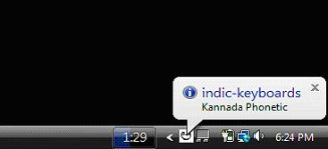
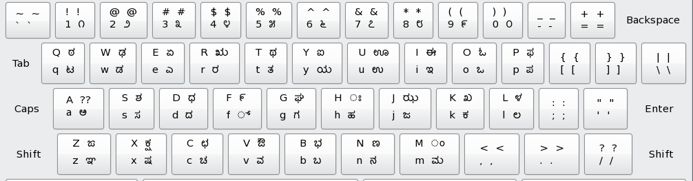

Getting Started
How to download and run indic-keyboards.
Visit http://code.google.com/p/indic-keyboards/downloads/list and select the download that is most suitable. The file name will look like:
indic-keyboards-x.x-yyy-xzz.zip
|
|-<kblayouts> : Contains all the XML files corresponding to the keyboard layouts
|-<resources> : Contains the images and system tray icons
|-indic-keyboards-sysHook.dll*
|-indic-keyboards-opChars.dll*
|-libIndicKeyboards-x86.so.1.0*
|-libIndicKeyboards-x86_64.so.1.0*
|-preferences.conf : Configuration information file for linux only.
|-indic-keyboards-xxx-x86_xx.jar : Executable java archive.
|-License document : Apache 2.0 license.
*Depends on the package downloaded.
[user@localhost /]$ cd to-the-unzipped-directory
[user@localhost to-the-unzipped-directory]$ sudo java -jar indic-keyboards-xxx-x86_xx.jar
Right click on the icon. The main menu will pop-up as shown below
Once selected, a balloon pops up and displays the language and the keyboard layout selected. The tray icon is changed to the “a” of the language selected.

To start typing in the selected language-layout, press “Alt + F12” or go to the main menu and click on “Enable” option provided. The software can be enabled or disabled whenever the user wants to alternate between English and the selected language. Open the application you want to run the software on. The application can be Notepad, WordPad?, Microsoft Word, Microsoft PowerPoint? etc. for Microsoft Windows and Linux applications Gedit, OpenOffice?.org, Kate etc. The software practically runs on ANY application which supports Unicode.
For a user who is not familiar with a keyboard layout he/she is using, an option to view the current layout is provided. He can do so by clicking on “Show Current Layout” option in the menu. For example, if the language selected is Kannada and the layout selected is KaGaPa?, then by clicking on the “Show Current Layout” option, the following image appears which can be used to familiarize with the layout. The Kannada KaGaPa? layout is as follows:
